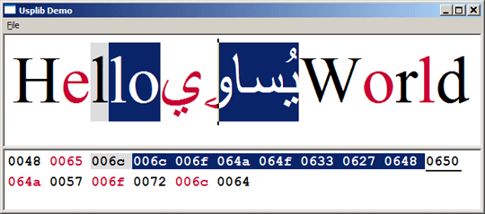
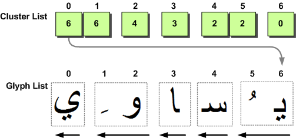
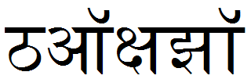
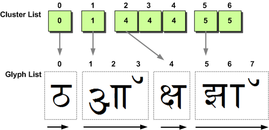
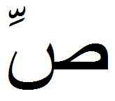
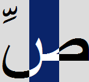

Drawing styled text with Uniscribe
前回のチュートリアルでは、新しいUspLibテキストレンダリングエンジンの主要なAPIの1つであるUspAnalyze関数を完成させました。次は、UspTextOut関数の実装に注目します。ここでの目的は、前回のチュートリアルで作成したグリフリストを分割し、ScriptTextOutで表示する前に色情報を適用することです。どの色が各グリフに属しているかを識別する方法が、このチュートリアルの中心テーマです。
このチュートリアルにはUnscribeに関連する非常に特殊な情報が含まれており、スタイル付きテキストの描画方法を理解しようとしている方にしか興味を持っていただけないと思います。UspLibの動作を確認したい場合は、次のチュートリアルに進んでください。
">
上の画像は、私がUniscribeを使って書いたもう一つの小さなユーティリティです。このアプリの目的は、UspLibライブラリのデモ（およびテスト）です。デモとUspLibのソースコードは、この記事のトップからダウンロードできます。
6. Drawing styled text
この時点では、単純にグリフをずらっと並べてScriptTextOutを呼び出して終わりにすることができます。正しく表示され、ユニコードテキストを表示するという目的は達成されたことになります。しかし、このテキストは単一のフォントと色でしか描画されませんので、代わりに ScriptString API を使った方がずっと簡単だったでしょう。覚えておいていただきたいのは、Uniscribe を使用する理由は、フォントや色の情報を非常に細かい方法で適用する必要があるからです。
本連載の第10回では、Neatpadでテキストをレンダリングする際に、3つのパスを使った新しい方法を提案しました。今回は、UspTextOut関数を使って、この描画方法を実装しました。
void UspTextOut( USPDATA * uspData,
HDC hdc,
int xpos,
int ypos,
RECT * bounds
)
{
//
// 1. Draw all background colours, including selection-highlights;
// selected areas are added to the HDC clipping region which prevents
// step#2 (below) from drawing over them
//
PaintBackground(uspData, hdc, xpos, ypos, bounds);
//
// 2. Draw the text normally. Selected areas are left untouched
// because of the clipping-region created in step#1
//
SetBkMode(hdc, TRANSPARENT);
PaintForeground(uspData, hdc, xpos, ypos, bounds, FALSE);
//
// 3. Redraw the text using a single text-selection-colour (i.e. white)
// in the same position, directly over the top of the text drawn in step#2
// Before we do this, the HDC clipping-region is inverted,
// so only selection areas are modified this time
//
PaintForegound(uspData, hdc, xpos, ypos, bounds, TRUE);
}
UspTextOutは、表示の前に文字列の分析を必要とするという点で、ScriptStringOutとよく似ています。UspAnalyzeによって生成された情報を含むUSPDATAオブジェクトを入力として受け取ります。3つのパスがありますが、実装する必要があるのはDrawBackgroundとDrawForegroundの2つの関数だけです。これらの関数の実装については、もう少し後に見てみましょう。
Characters vs Glyphs vs Clusters
Uniscribeの大きな問題点は、ScriptShapeとScriptPlaceの呼び出し結果をどのように読み解くかということです。テキストの各行について返される情報があまりにも多いため、そのすべてを理解するにはかなりの時間と労力が必要です。このチュートリアルを終える頃には、Uniscribeのすべての機能がどのように連携しているかについて、少し理解できるようになっていることを願っています。
Uniscribe（および一般的なコンピュータタイポグラフィ）を理解する上で重要なことは、文字とグリフの違いです。これまでNeatpadの主な焦点は、論理的なUnicode文字シーケンスでした。しかし、Uniscribeが加わってからは、グリフに焦点が当てられるようになりました。ここで理解していただきたいのは、文字とグリフの間には直接的な関係はないということです。
英語のような単純な用字系では、フォントは通常、1つのUnicode文字に対して1つのグリフを含みます。しかし、より複雑な用字系ではこの関係が変わることがあります。1 つの Unicode 文字が複数のグリフになることもあります。逆もまた真なりで、複数のUnicode文字が1つのグリフになることもあります。この挙動は、使用しているフォントによって様々です。このように文字とグリフが分かれているのは、属性のスタイルランがすべて文字ベースであり、このスタイル情報を特定のグリフに変換する必要があるという問題があります。
さらに複雑なことに、グリフクラスターの概念を理解しなければなりません。クラスタとは基本的に、選択可能な1つのユニットとして扱わなければならないグリフのグループのことです。これ自体は問題ではありませんが、クラスターの境界を尊重しなければならないため、グリフシーケンスのレンダリングが少し複雑になります。
Understanding the Logical Cluster List
ロジカルクラスターリストは、キャラクターとグリフの関係を確立するための鍵となります。このリストは ScriptShape が pwLogClust[] 配列で返します。このリストは、論理的な文字の位置とグリフ クラスタの位置の間のマッピングを提供します。UspLibは、各ランの論理クラスタ情報をUSPDATAオブジェクトのclusterList[]フィールドに格納します。
このような文字からグリフへのマッピングの考え方をサポートするために、ロジカルクラスターリストは2つの重要なコンセプトを表す必要があります。
- まず、元のUnicode文字列内のクラスタ境界、つまり各クラスタの論理文字単位（WCHAR）でのオフセットを特定します。clusterListの各エントリは、元の文字列の1文字に正確に対応しているため、clusterListは常に処理対象のUnicode文字列と同じ長さになります。
- 次に、この同じ配列は、ScriptShape と ScriptPlace によって生成されたグリフバッファ内の各グリフクラスターのオフセットも特定します。
つまり、clusterListの個々の要素の値（コンテンツ）はグリフクラスターを定義し、配列要素の位置は論理的な文字用語でクラスターを表現します。
例として、前回見たのと同じアラビア語の文字列「يُساوِي」を使います。この7つのユニコード文字からなる文字列では、以下のような論理クラスタ情報がScriptShapeによって生成されます。なお、表の上部には、論理配列のインデックスの位置が記載されています。
| Array | [0] | [1] | [2] | [3] | [4] | [5] | [6] |
| WCHAR wszText [] | U+064A | U+064F | U+0633 | U+0627 | U+0648 | U+0650 | U+064A |
| WORD clusterList [] | 6 | 6 | 4 | 3 | 2 | 2 | 0 |
全体のクラスターは、ロジカルクラスターリストの中の同じ数字をグループ化することで識別されます。上の表のクラスターリストからわかるように、2つの6と2が（他の単数の数字に加えて）あり、結果的に5つの全体のクラスターが一緒になっていることがわかります。下の画像は、このグループ化の概念を示したものです。
">
クラスタリストは常に論理的な順序で格納されているのに対し、グリフリストは常に視覚的な順序で格納されていることに注意してください。これは、右から左に書かれたスクリプト（上のアラビア文字列など）では、配列を読むときにcluster-listの要素が減っていくことを意味します。この結果、最初に描画しなければならないグリフはグリフリストの一番最後になります。この点を考慮して、クラスターの内訳は以下のようになります。
- 第1クラスター：2つのグリフで表される2つの文字。
- 第2クラスター：1つのグリフで表される1つの文字。
- 第3クラスター：1つのグリフで表される1つのキャラクター。
- 第4クラスター：2つのグリフで表される2つの文字。
- 第5クラスター：1つのグリフで表される1つのキャラクター。
うまくいけば、どのようにして論理的なクラスタが特定されたのか、かなり明らかになるでしょう。各クラスタ内のWCHARの数は、各グループ内のキャラクタの数によって計算されます。各クラスタに含まれるグリフの数を計算するのは、あまり明らかではありません。ここで重要なのは、クラスター値の差を見ることです。このようにして、各クラスタの識別が行われました。
- 最初の2つの6は、2つのWCHAR（文字位置0および1）で構成されるクラスタ#1を識別します。この6という値は、このクラスタのグリフを含むglyphListの終わりを示しています。このクラスタが2つのグリフ（#5と#6）で表されていることがわかるのは、以下の理由によります。
- クラスタリストの次の値(4)は、2つのことを教えてくれます。明らかに、このクラスターはグリフリストのグリフ#4から始まっています。しかし、これは最後のクラスターに2つのグリフがあったことも意味します（6-4 = 2）。
- 第3のクラスターは、単一のグリフ#3と単一のWCHARで構成されています。
- 4つ目のクラスターは、再び2つのWCHARで構成されており、グリフ#1と#2で表現されています。
- 最後の5つ目のクラスターは、再び1つのWCHARで、グリフリストのグリフ#0で表されます。
ご覧のように、ここでの重要な詳細は、各クラスタ内のグリフの数をカウントするために、グリフインデックスの差を見ることです。また、右から左へ書かれたスクリプトでは、グリフが逆順に格納されているため、特別な配慮が必要です。私がこの問題に対処する方法は、x座標を実行の最後まで進め、SetTextAlign(TA_RIGHT)を呼び出し、出力場所を毎回左に移動させることで、グリフが論理的（右から左）な順序で出力されるようにしました。
理解すべき重要な点は、右から左に書かれたスクリプトであっても、常にクラスターリストに論理的な順序で従うということです。私たちは、要素値の順序を頼りに、各グリフクラスターが描かれるべき場所を探します。
Another example
前の例は、もちろん右から左へのスクリプトで、これらのスクリプトがUniscribeで表現されるユニークな方法を強調しています。次に示す例は、MSDNのScriptShapeドキュメントにある例をベースにしており、複雑な左から右へのテキストがUniscribeでどのように表現されるかを強調しています。
">
U+920, U+911, U+915, U+94D, U+937, U+91D, U+949
今回の文字列は、デーヴァナーガリー文字である。たまたま「見た目」の良いコードポイントを繋げただけなので、何を意味しているのか全くわかりません。もし誰か、7文字のUnicodeフレーズを提供してくれる人がいたら、下記のようなグリフ＋クラスタの特性になるので、ぜひ連絡してください。
| Array | [0] | [1] | [2] | [3] | [4] | [5] | [6] |
| Unicode string | U+0920 | U+0911 | U+0915 | U+094D | U+0937 | U+091D | U+0949 |
| clusterList[] | 0 | 1 | 4 | 4 | 4 | 5 | 5 |
ここでの重要な違いは、配列を読むときにクラスタリストの要素がどのように増えていくかということです。左から右への実行では、グリフは元のUnicode文字と同じ順序で格納されます。これは、多くの西洋の読者が最も自然だと感じる順序です。
">
この図は、論理的なキャラクタとグリフクラスターの関係を、今度は左から右へのテキストの場合に示しています。この例は、必要なグリフ+クラスターの特性を満たすフレーズ、フォント、スクリプトが見つからなかったため、純粋に架空のものです。繰り返しになりますが、クラスターあたりのグリフ数は、クラスターリストの要素間の差によって計算されます。
- 第1クラスター：1つのグリフで表される1つの文字（1-0=1
- 第2クラスター：3つのグリフで表現される1つのキャラクター（4-1=3
- 第3クラスター：1つのグリフで3つのキャラクターが表現される（5-4=1
- 第4クラスター：3つのグリフで表される2つのキャラクター（8-5=3
最後のクラスターのグリフ数を計算したのは、今回の実行でScriptShapeによって生成されたグリフの数（合計8個）がわかっていたからです。
Interpolation is the key
Uniscribeで理解すべきことは、文字とグリフの分離です。では、別の例として、3つのキャラクターが2つのグリフを構成している場合はどうなるでしょうか。ここで問題となるのは、各文字の色情報をグリフにどのように配分するか、そしてどのグリフがどの色を担当するかということです。
">
U+0635 U+0651 U+0650
グリフが一般的に水平方向に並んでいるいくつかのスクリプトでは、色の関係をほとんど推測することができます。しかし、グリフがクラスタ内で垂直に重なり合っている場合や、グリフに対して文字数が不均等な場合には、色と特定のグリフを関連付ける簡単な方法はありません。
UspLibでは、この問題を2つの方法で解決しました。1つは背景を描くための方法、もう1つは実際のグリフ自体（前景）を描くための方法です。前景を描くのは簡単で、単純にクラスタ内のすべてのグリフを単一の色で描くことにしました。クラスタに複数の色属性がある場合、最初の色だけが選択され、残りの色は無視されます。これは圧倒的に簡単な方法であり、実際には個々のグリフがクラスター内で独自の色を持つことはないでしょう。
背景の描き方は、反転・ハイライト方式を考慮しなければならないため、かなり異なります。私がここで使った方法は、背景を描くときに各クラスタの幅に合わせて色を補うというものです。この方法については、マイクロソフト社がMSDNの「ScriptXtoCPとScriptCPtoXの注意点」の項で次のように示唆しています。
"論理クラスター配列のクラスター情報は、グリフのクラスターの幅を、それらが表現する論理的なキャラクターの間で均等に共有するために使用されます。"
この方法がテキストレンダリングにも使えると論理的に理解するのに時間がかかりましたが、実装してみるとScriptString APIで使われている方法と全く同じであることに気づきました。
">
そのプロセスはとてもシンプルです。各クラスタを構成する文字数と、各クラスタを構成するグリフの数がわかっています。そこで、これらのグリフの幅を合計して、クラスタの総幅を算出します。そして、クラスターの幅をクラスター内の文字数で割ると、各カラーバンドの幅がわかります。
advanceWidth = clusterWidth / charCount;
いくつかのスクリプトでは、このようにクラスタを分割することは非常に理にかなっています。特にアラビア語では、キャレットはグリフクラスタの境界ではなく文字の境界に位置するのが一般的です。しかし、ほとんどのスクリプトでは、これは正しくないとみなされるでしょう。アラビア語のためだけに特別なケースを用意するのではなく、色属性がこのように細かく設定されている場合には、UspTextOutが常にグリフクラスター上で補間するように書きました。ScriptCPtoX がキャレット (したがって選択高さ) をクラスタの中央に置くことを許可するのは、適切な場合だけであるという事実に頼ることにします。
最後に、クラスタの除算に整数演算を用いると、丸め誤差が生じる可能性があります。これは大した問題ではありませんが、 ScriptCPtoX が推定上の除算操作を行ったときに得られる結果と全く同じにする必要があります (そうしないと、たまに 1 ピクセルの誤差が生じることがあります)。ScriptCPtoXはMulDivを使って計算していると思われますが、これは正しい結果が得られるように見えるためで、私はUspLibに使っています。
Drawing the background
前述の通り、補間を使用しているため、背景の描画は少し異なります。まずは、PaintBackgroundルーチンを見てみましょう。
void PaintBackground(USPDATA * uspData, HDC hdc, int xpos, int ypos, RECT * bounds)
{
int i;
ITEM_RUN * itemRun;
// Process the item-runs in visual-order
for(i = 0; i < uspData->itemRunCount; i++)
{
itemRun = GetItemRun(uspData, i);
// paint the background of the specified item-run
PaintItemRunBackground(uspData, itemRun, hdc, xpos, bounds);
xpos += itemRun->width;
}
}
ご覧の通り、この関数は非常にシンプルです。単に、アイテムランを視覚的な順序で処理し、各ランのx座標をアイテム幅だけ進めます。各アイテムランの背景は、PaintItemRunBackground関数によって個別にレンダリングされます。
void PaintItemRunBackground(USPDATA *uspData, ITEM_RUN *itemRun, HDC hdc, int xpos, int ypos)
{
int i, lasti;
// locate the item-run buffers
WORD * clusterList = uspData->clusterList + itemRun->charPos;
ATTR * attrList = uspData->attrList + itemRun->charPos;
int * widthList = uspData->widthList + itemRun->glyphPos;
for(lasti = 0, i = 0; i < itemRun->len; i++)
{
// search for a logical cluster boundary (or end of run)
if(i == itemRun->len || clusterList[lasti] != clusterList[i])
{
<< process cluster >>
}
}
}
主な作業は、論理的なクラスターの位置を特定することです。2つのループインデックス(lastiとi)は、元のテキスト文字列におけるこれらのクラスタ位置を表しています。各クラスタ内のWCHARの数は、したがって(i-lasti)となります。常に論理的な順序で反復しているので、これはLTRとRTLの両方のテキストに当てはまります。
<< process cluster >>
int glyphIdx1, glyphIdx2;
// locate glyph-positions for the cluster
GetGlyphClusterIndices(itemRun, clusterList, i, lasti, &glyphIdx1, &glyphIdx2);
// measure width of this group of glyphs
for(runWidth = 0; glyphIdx1 <= glyphIdx2; )
runWidth += widthList[glyphIdx1++];
// divide the cluster-width by the number of code-points that cover it
advanceWidth = MulDiv(runWidth, 1, i-lasti);
クラスタが特定されると、GetGlyphClusterIndicesが呼び出されます。この関数はclusterListを検査して、iとlastiに対応するグリフインデックスの位置を返します。
次に、グリフクラスターの幅が計算されます。これは、glyphIdx1 と glyphIdx2 の間を単純に繰り返して、クラスター幅を文字数（WCHARs）で割ることで行われます。これで、ちょっとした背景を描くたびにどこまで進めればよいかがわかります。
for(a = lasti; a <= i; a++)
{
// look for change in attribute background
if(a == itemRun->len ||
attr.bg != attrList[a].bg ||
attr.sel != attrList[a].sel )
{
PaintRectBG(uspData, itemRun, hdc, xpos, &rect, &attr);
rect.left = rect.right;
}
}
最後のタスクは、クラスター上の色属性を補間することです。背景を塗るのは色の変化を検出したときだけなので、ほとんどの場合、1回の操作でアイテムランの背景を塗ることができます。上記のコードリストには、（整数）除算の丸め誤差を補正するという細かい部分が含まれていませんが、これはコードを理解する上で必要ありません。
PaintRectBG関数のコードは省略しますが、選択ハイライトの背景領域を描画した後にExcludeClipRectを呼び出すこと以外は、あまり興味深いものではありません。
void GetGlyphClusterIndices( USPDATA * uspData,
ITEM_RUN * itemRun,
int clusterIdx1,
int clusterIdx2,
int * glyphIdx1,
int * glyphIdx2
)
{
WORD *clusterList = uspData->clusterList + itemRun->charPos;
// locate glyph-positions for the cluster
if(itemRun->analysis.fRTL)
{
// RTL scripts
*glyphIdx1 = clusterIdx1 < itemRun->len ? clusterList[clusterIdx1] + 1 : 0;
*glyphIdx2 = clusterList[clusterIdx2];
}
else
{
// LTR scripts
*glyphIdx1 = clusterList[clusterIdx2];
*glyphIdx2 = clusterIdx1 < itemRun->len ? clusterList[clusterIdx1] - 1 : itemRun->glyphCount - 1;
}
}
上記は GetGlyphClusterIndices 関数です。これは、クラスタ配列を読み込むときにクラスタ要素が減少する（RTLスクリプトの場合）が、LTRスクリプトでは増加するために必要です。
Drawing the Foreground
テキストを描くプロセスは、背景を描くプロセスと非常によく似ているので、今回はあまり多くのコードを含める必要はありません。DrawForegroundItemRun関数の冒頭に飛び込んでみましょう。
// right-left runs can be drawn backwards for simplicity
if(itemRun->analysis.fRTL)
{
oldMode = SetTextAlign(hdc, TA_RIGHT);
xpos += itemRun->width;
runDir = -1;
}
まず最初に行うことは、右から左への文字列の場合、text-alignmentをTA_RIGHTに設定し、x-coordinateを実行の最後まで進めることです。これにより、論理的な順序でテキストを描画することができます（logical-cluster-listを歩くように）。これは重要なことで、この1つの詳細を除けば、LTRとRTLの両方のテキストを描画するための1つの関数を維持することができるということです。
// loop over all the logical character-positions
for(lasti = 0, i = 0; i <= itemRun->len; i++)
{
// find a change in attribute
if(i == itemRun->len || attrList[i].fg != attrList[lasti].fg )
{
// scan forward to locate end of cluster (we must always
// handle whole-clusters because the attr[] might fall in the middle)
for( ; i < itemRun->len; i++)
if(clusterList[i - 1] != clusterList[i])
break;
// locate glyph-positions for the cluster [i,lasti]
GetGlyphClusterIndices(itemRun, clusterList, i, lasti, &glyphIdx1, &glyphIdx2);
<< display text >>
}
}
フォアグラウンドレンダリングとバックグラウンドレンダリングの次の違いは、クラスターの境界線をどのように特定するかです。今回はまず、色の変化を探します。新しい色が見つかったら、前方をスキャンしてクラスターの端を探します。これにより、補間を気にすることなく、クラスター全体を一色で描くことができます。
<< display text >>
// measure the width (in pixels) of the run
for(runWidth = 0, g = glyphIdx1; g <= glyphIdx2; g++)
runWidth += widthList[g];
// only need the text colour as we are drawing transparently
SetTextColor(hdc, forcesel ? uspData->selFG : attrList[lasti].fg);
//
// Finally output the run of glyphs
//
hr = ScriptTextOut(
hdc,
&uspFont->scriptCache,
xpos,
ypos,
0,
NULL,
&itemRun->analysis,
NULL,
0,
glyphList + glyphIdx1,
glyphIdx2 - glyphIdx1 + 1,
widthList + glyphIdx1,
NULL,
offsetList + glyphIdx1
);
// +ve/-ve depending on run direction
xpos += runWidth * runDir;
lasti = i;
テキストカラーが設定されると、 ScriptTextOut が呼び出され、クラスター内のグリフの範囲が指定されます。繰り返しになりますが、色の変更があった場合にはテキストを出力するだけなので、通常は ScriptTextOut の呼び出しは 1 回だけです。
7. ScriptTextOut
念のため、以下にScriptTextOutのプロトタイプを示します。
HRESULT WINAPI ScriptTextOut(
HDC hdc,
SCRIPT_CACHE * psc,
int x,
int y,
UINT fuOptions,
// ExtTextOut options
RECT * rect,
SCRIPT_ANALYSIS * analysis,
WCHAR * pwcReserved,
int iReserved,
WORD * pwGlyphs, // in - results of ScriptShape
int cGlyphs,
int * piAdvance, // in - results of ScriptPlace
int * piJustify,
GOFFSET * pGoffset // in - results of ScriptPlace
);
これは、誰が見てもかなり威圧的な機能です。注目すべきパラメータは
- fuOptionsには、ETO_CLIPPED、ETO_OPAQUE、またはゼロのいずれかを指定します。これらは標準的なExtTextOutフラグです。背景は自分で描いているので、これらのパラメータを使用する必要はありません。opaqueを指定した場合は、グリフのクラスタ全体をこの関数に渡す必要があることに注意してください。
- pwGlyphsとcGlyphsは、ScriptShapeが返すグリフ値のリストを特定します。
- piAdvanceとpGoffsetは、ScriptPlaceが返したグリフ配置バッファを指します。
- piJustifyは、オプションである正当化されたアドバンス値の配列を指します。
ScriptTextOutは基本的にExtTextOutのラッパーですが、この関数にはWCHAR*パラメータがないことにお気づきでしょうか。これは、ScriptTextOutがETO_GLYPH_INDEXオプションを付けてExtTextOutを呼び出し、指定したグリフのバッファを渡しているからです。
ScriptTextOutは、GDIを呼び出す前に追加の処理（グリフの再配置など）を行う場合があるので、ExtTextOutを直接呼び出してScriptTextOutを回避しようとしないでください。
Uniscribe Limitations
Uniscribe の欠点のひとつは、Uniscribe が最も得意とするところ、つまり文字列を個々に成形可能なアイテムに分割することです。問題は、多くのホワイトスペースや句読点を含む文字列では、多数のアイテムランが発生することです。これ自体は悪いことではありませんが、テキストの行をレンダリングする際に問題となります。ScriptTextOutの呼び出し回数が多いと、同じ行のテキストでExtTextOutを呼び出した場合と比べて、パフォーマンスが低下します。
複雑なスクリプトの場合は、ScriptItemizeで文字列を分割するしかありません。しかし、複雑でない（つまり英語の）スクリプトの場合、アイテムランをどうにかして再結合し、ScriptTextOutの呼び出し回数を減らすことができればいいのですが。しかし、SCRIPT_ANALYSIS::eScriptフィールドを調べることで、アイテムランが複雑であるかどうかを識別することは可能です。
struct SCRIPT_ANALYSIS
{
WORD eScript : 10;
WORD fRTL : 1;
...
};
さて、eScriptフィールドは「不透明」であり、その値を推測すべきではありません。しかし、このフィールドは、システムにインストールされている特定のスクリプトシェーピングエンジンに関する情報を含む「グローバルスクリプトテーブル」へのインデックスとして使用することができます。
HRESULT WINAPI ScriptGetProperties(SCRIPT_PROPERTIES ***ppSp, int *piNumScripts);
ScriptGetProperties関数は、このglobal-script-tableへのポインタを返し、tableの各エントリは、SCRIPT_PROPERTIES構造体へのポインタとなります。
struct SCRIPT_PROPERTIES
{
DWORD langid;
DWORD fNumeric;
DWORD fComplex;
...
};
この構造体には多くの情報フィールドがありますが、私たちにとって興味深いのは、fComplexフラグです。これらの情報をまとめると、次のような関数になります。この関数は、アイテムランが複雑であるかどうかを示すブール値を返します。
BOOL IsRunComplex(ITEM_RUN *itemRun)
{
SCRIPT_PROPERTIES ** propList;
int propCount;
int scriptIndex;
// get pointer to the global script table
ScriptGetProperties(&propList, &propCount);
// the SCRIPT_ANALYSIS::eScript is an index to the global script table
scriptIndex = itemRun->analysis.eScript;
// locate the script from the script-index
return propList[scriptIndex]->fComplex;
}
理論的には、複雑でないアイテム・ランを識別し、SCRIPT_ANALYSIS::eScriptフィールドをSCRIPT_UNDEFINEDに設定して、1つのランに統合することができる。これらの作業は、ScriptShapeが呼び出される前に行う必要があります。
Coming up in Part 15
新しいチュートリアルを投稿するたびに、Neatpadのアップデートがあるだろうと約束していますが、もちろんそれは実現していません（またか！）。Uniscribeは非常に複雑で、最初に予想していたよりもはるかに多くの時間がかかっています。今のところ、このチュートリアルのトップにあるUspLibのデモをダウンロードすることができます。